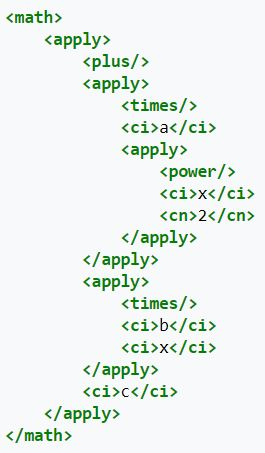

"MathML"
Hver enkelt kode har en spesifikk oppgave. Bildet over starter med en "math" tag. Den viser at dette er et mattestykke som skal regnes ut innenfor begynnelse og end-tag. Hver enkelt tag har i oppgave å presentere et tall, tegn eller objekt.
Her vil "ci" presentere "a", "ci" presenterer "x" og "b" og "cn" presenterer "2".